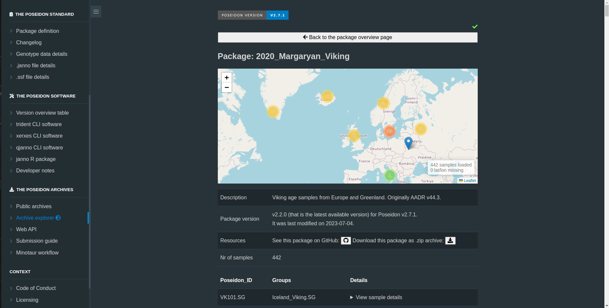

Navigating the Ancient DNA Landscape: Introducing the Poseidon Archive Explorer
In the ever-evolving world of ancient DNA research, staying up-to-date with the latest publications and datasets is essential. To address the challenges faced by researchers in this field, the Poseidon ecosystem has introduced a new feature - the Poseidon Archive Explorer. This dynamic web application offers a comprehensive overview of current Ancient DNA publications, providing a valuable resource for scholars and enthusiasts alike.

In the Poseidon ecosystem, there are three main components:
The Poseidon Package Format: This component serves as a standardized framework for organizing genotype data, along with associated meta- and contextual information. It offers a structured, yet adaptable, format that is easily readable by both humans and machines.
The Poseidon Software: This component encompasses a suite of in-house developed software tools and the Poseidon R package. These resources are designed to facilitate the efficient management of genotype data, ensuring ease and precision in data handling.
Public repositories : Poseidon currently maintains 3 Public repositories. The Poseidon Community Archive, The Poseidon Minotaur Archive, and The Poseidon AADR Archive. These repositories are carefully organized to store Ancient DNA genotyping data together with archaeological and laboratory context information. To learn more about each of their specific roles, you can visit this link
The Poseidon Ecosystem further underscores its commitment to data integrity by integrating an in-house web API with the GitHub Large File Storage system. This hybrid approach ensures robust version control and data cleanliness. Researchers and enthusiasts can benefit from this combination, fostering a harmonious ecosystem of data accessibility and precision.

A Bridge Between Data and You
The concept behind the development of Archive Explorer is pretty straightforward. We’ve been housing all our Poseidon genotype data using the GIT Large File Storage system (GIT LFS). While that’s all fine and dandy for version control, we realized we needed something more interactive and user-friendly to share and visualize this data with the public. The solution? A dynamic web application built on JavaScript. When you land on the Archive Explorer page, you’ll notice it’s got some neat features. Up top, there’s an archive selector. This is your gateway to choose the specific archive you’re interested in. Then, we’ve thrown in a world map powered by the Leaflet map plugin because it’s open source and super easy to use.
This map? It’s not your regular map. It’s more like a bird’s-eye view of all the genotype data scattered across the globe. You can see data points from around the world, making it easy to grasp the big picture.
Three Paths to Poseidon Genotype Data: Take Your Pick
We give you three different routes to get to the Poseidon genotype data you’re after:
If you know exactly what you’re looking for, you can type a full or partial name in our dynamic search bar and select the package you want.
Want to explore data from a specific part of the world? Check out the world map, click on a marker, and voila! You’ll see a snapshot of what’s in that package, and a link to dive straight into it.
For those who prefer the manual approach, we’ve got a table view of all the publications available in each archive. You can roll up your sleeves and search for the info you need.


Getting Up Close and Personal with the Data
Once you’ve picked a package, you can access it either through the map marker or by hitting that trusty magnifying glass icon on the table view. If you’re into details, the table view lets you view genotype data or download it as a “zip” file via our inhouse Poseidon server.
Exploring the Package: More Than Meets the Eye
The package view isn’t all that different from the general user interface, but it’s filtered to show only the markers that are relevant to that particular publication. And if you want to dig deeper, just click on each “PoseidonID” to access more detailed genotype information. We’re also cooking up a new feature to display some informative descriptive statistics for each publication, giving you a broader picture of the data. So stay tuned!
In a nutshell, the Archive Explorer is your one-stop shop for navigating the world of Poseidon genotype data. It’s got the goods for the pros and is user-friendly enough for the rest of us to dive into the fascinating realm of ancient DNA research.